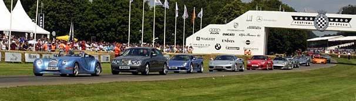
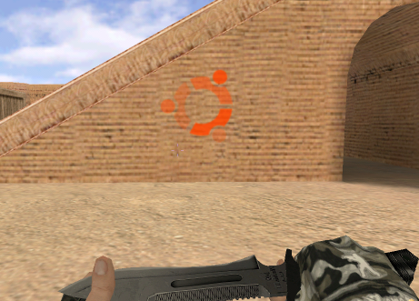
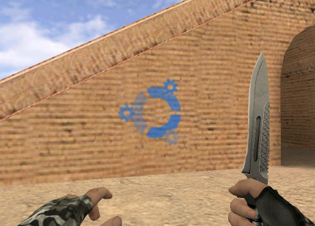

Įrašyta 2007-06-28, 10:42 | 0 Komentarų
Vakar apturėjau dar vieną kasdvisavaitine (ar išvis yra toks žodis?) tapusio Brighton Coding Dojo sesiją. Šios sesijos metu programavome Ruby kalba. Kūrėme Klondike Solitaire žaidimą, pagal CodeKata scenarijų. Visa tvarka kaip ir sesijos vykusios festivalio metu. Prie kompo vienu metu sėdi du programuotojai - "vairuotojas" ir "rašytojas", keičiamasi kas ~5 minutes (nors realiai gal ir po daugiau prasėdėjom :)).
Iš visos 8 žmonių grupės turėjome tik du programuojančius Ruby (tai tik dar kartą patvirtina teiginį, kad kodo rašymas yra lengviausia programavimo dalis ;)). Jie pradėjo sesiją ir kartu pravedė trumpą sintaksės pamokėlę. Pradžia buvo sunkiausia, vyko apmąstymai apie duomenų tipus, šiaip strategiją. Po kiek laiko viskas įsibėgėjo, pradėjom rašyti metodus, po to vienas žmogus pasiūlė susikurti testavimo klasę, kas padarė mūsų darbą lengvesnį ir įdomesnį.
Pirmiausia susikūrėm kortų kaladės klasę:
class Deck
attr_accessor :cards
#suitHash = { 0 => "Spades", 1 => "Hearts", 2 => "Diamonds", 3 => "Clubs"}
def initialize
@cards = []
@suits = [:spades, :hearts, :diamonds, :clubs]
puts @cards
@suits.each do |suit|
13.times do |number|
card = Card.new(number+1,suit)
@cards.push(card)
end
end
end
def to_s
@cards.to_s
end
def shuffle
#Exclamation mark used to modify in place, not create a new version.
@cards.sort! {rand(52) <=> rand(52)}
end
def deal
@cards.pop
end
end
Viskas vyko "trial and error" metodu - dedame žingsnį, žiūrime ar veikia, jei ne - taisome klaidas. Man labai įdomi dalis buvo testavimo klasės rašymas ir vykdymas. Sukūrę metodą turėjom jį pratestuoti. Reikėjo sugalvoti kaip patikrinti ar sukurtos visos kortos, ar jos išmaišytos, ar teisingai vyksta dalinimas ir t.t. Darėme begales klaidų (aš sugebėjau gauti net <false> is not true klaidą :D) tad skirtos 2 valandos prabėgo akimirksniu. Kadangi žaidimo nebaigėme, o darbas buvo tikrai įdomus, nusprendėme pratęsti jo kūrimą per ateinančias sesijas.
Beje, kas nežino - aš Ruby neprogramuoju ir pradėti nežadu (renkuosi Python ;)). Kaip ten bebūtų, tokios sesijos yra labai geras dalykas. Tiek gilinti programavimo žinias, mokytis iš labiau patyrusių, tiek gerai praleisti laiką.
Pabaigai dar papostinu testavimo failą, o kitkas liks ateičiai.
require 'test/unit'
require 'Klondike'
class TestKlondike < Test::Unit::TestCase
# def setup
# end
# def teardown
# end
def test_deck
deck = Deck.new
assert_equal(47, deck.cards.length)
end
def test_shuffle
deck = Deck.new
anotherDeck = Deck.new
anotherDeck.shuffle
assert_not_equal(deck.to_s, anotherDeck.to_s)
end
def test_deal
deck = Deck.new
deck.deal
assert_equal(46, deck.cards.length)
end
def test_game_deal
game = Game.new
length = game.deal.length
game.deal_cards
assert(game.deal.length < length)
assert(game.discard.length > 0)
end
def test_add_to_foundation
f_1, f_2, f_3, f_4 = Foundation.new
ace_spades = Card.new(1, :spades)
assert(f_1.add(ace_spades))
#assert(f_1.length == 1)
end
end
Laukite tesinio ;)
Gairės: Geek, Programavimas, Ruby
Įrašyta 2007-06-24, 23:27 | 0 Komentarų

(© The Goodwood Estate Company Limited)
Pastarąsias tris dienas (penktadienį, šeštadienį, sekmadienį) teko garbė dirbti Goodwood'o festivalyje. Tai vienas prestižiškiausių moto šou, kuriame susirenka didžiausios auto pasaulio žvaigždės (Rubens Barrichello, Jenson Button, David Coulthard, Colin McRae, Juan Pablo Montoya, Lewis Hamilton ir daugelis kitų šių dienų bei praeities veikėjų.), suvažiuoja geriausi pasaulio automobiliai (Bugatti Veyron, Aston DBS, Giugiaro Mustang, Audi R8 ir t.t. visų net neišvardinsiu.), o kad viskas praeitų sklandžiai samdomas geriausias pasaulyje personalas - aš ir mano kolegos ;D (žinau žinau, aš tikras kuklumo įsikūnijimas :D)
Taigi, kas dar, be to ką išvardinau įžangoje, man paliko įspūdį:
Parodos. Be oficialių automobilių parodų, kurias rengė gamintojai, buvo galima paganyti akis žiūrint ir į svečių automobilius. Mačiau tokius šedevrus kaip Ferrari, Aston Martin, Lamborghini, Ford Mustang ir taip toliau. Žinoma buvo vienas kitas Golf'ukas, Ford Sierra ir panašūs kledariukai.
Lenktynės. Lenktyniavo įvairūs automobiliai, nuo senų, kadaise buvusių geriausiais pasaulyje, iki dabartinių Formule 1 bolidų. Teko užmatyti (per tiesioginę transliaciją) kaip Ford Mustang rieda ant dviejų ratų (kaip filme Greiti ir įsiutę), deja savo akim to stebėti nebuvo laiko - darbas.
Žinau kad jau klausiat ką gi aš ten dirbau. O dirbau padavėju :) Visoje teritorijoje buvo įvairių paviljonų, kur žmonės susirinkdavo pavalgyti. Iš viso dirbau dviejuose. Tai buvo Stewart Pavillion, kur žmonės buvo iš anksto užsisakę vietas. Man, kaip padavėju dirbančiam pirmą kartą, labiausiai nepatiko aptarnauti visokius VIP, apie kuriuos reikėjo šokinėt kaip apie kokius karalius :) Antrasis paviljonas kuriame dirbau - Drives Club. Jame buvo įsikūręs dunhill restoranas. Jame dirbau vieną dieną iš dviejų. Tikriausiai, dėl to, kad ten buvo ne tokie įdomūs klientai ir kolegos, bei dėl to, kad Stewart'e dirbo simpatiška menedžerė, kuri dar mane pavadino meilučiu (sweetie) [redface] :D
Dar keletas įspūdžių iš darbo: pirmas dvi dienas darbo pabaigoje vos pavilkau kojas. 8 valandas stovėti, vaikščioti ir bėgioti tikrai nėra didelis malonumas. Kas dirbę padavėjais - žino; per priešpiečius, pietus, darbo pabaigoje ir šiaip laisvu laiku, galima paskanauti patiekalų kurie ruošiami svečiams. Kadangi aš esu didelis smaližius, daugiausiai "ragavau" pyragus, šokoladus, zefyrus, braškes; dabar pakankamai pasitikiu savimi nešdamas padėklą pilnai prikrautą taurių, puodelių, lėkščių ar dar kokio stuff'o; kolegė britė pasakė kad aš, nors ir šneku su akcentu, bet atrodau kaip anglas; bedirbdamas radau vieną lietuvaitę, kuri, kaip ir aš, iš šiaulių; labiausiai patiko šiandien (sekmadienį, paskutinę dieną), kadangi darbo buvo ne taip daug, galėjau daugiau laiko praleisti virtuvėje plepėdamas su kolegom bei "ragaudamas" tos dienos patiekalus. Labiausiai skaudėjo širdelę žiūrint kaip lauk meta nepanaudotą maistą, bei gėrimus. Tokiomis akimirkomis vis pagalvodavau, kad to maisto užtektų pamaitinti pusę afrikos (:
Galiausiai, važiuodamas namo mąsčiau, kad tai buvo "The best work experience I have ever had". Žinoma buvo ir akimirkų kai keikiau tą darbą: tai jau minėtos skaudančios kojos, net šlubuoti teko; lietus, kuris buvo kaltas, kad kol nueini iki darbo vietos, batai ir kelnės iki kelių būna murzini (ne visur buvo patiestas takas, tad teko mindyti purvynus); pikti menedžeriai (ne ta kuri man patiko :), jų išviso buvo 4 ar 5 per paviljoną) bei kitos smulkmenos. Bet juk žmonės (bent jau aš) linkę blokuoti blogus prisiminimus, tad galiausiai likau su nepakartojamais įspūdžiais.
Gairės: Darbas, Gyvenimas
Įrašyta 2007-06-16, 20:36 | 2 Komentarai
Pasiupgreidinęs savo Counter-Strike pagalvojau, kad iki visiškos laimės man trūksta tik gero spray'aus (purškiamo logotipo). Iš pradžių piešiau kažką, dariau su raidėm ir t.t. galiausiai sumąsčiau, kad reikia kažko įdomesnio. Taigi, susiradau internete du logotipus - Ubuntu ir Kubuntu. Šiek tiek juos apdorojęs su GIMP'u gavu tokius rezultatus:

ir

Norintys gali išsisaugoti bmp failus, kuriuos tereiks nusikopijuoti į žaidimo direktorijoje (valve, ne cstrike) esantį logos katalogą. Pačiame žaidime pasirinksite vieną iš atsiradusių spray'u ir nurodysite spalvą. Ubuntu geriausiai tinka raudona, o Kubuntu - tamsiai mėlyna. Sėkmės ;)
Gairės: Coutre-Strike, Geek, Ubuntu
Įrašyta 2007-06-10, 20:17 | 0 Komentarų
Lobbyists for the popular fast food chain want to redefine a word in the dictionary. They want to change the definition of McJob from "a low-paying job that requires little skill and provides little opportunity for advancement", to "a job that is stimulating, rewarding, and offers skills that last a lifetime".
Gairės: Pastebėjimai
Įrašyta 2007-05-29, 11:40 | 0 Komentarų
Šiandien, kaip ir tikėjausi, gavau banko kortelę, ko pasekoje planuoju nusipirkti (sub)domeną. Labai tikiuosi, kad banke manęs neapgavo ir galėsiu atsiskaitinėti internetu. Tokia ir buvo pagrindinė šios sąskaitos atsidarymo priežastis :)
Kalbant apie paštą, visdar laukiu nežinau.lt maikės, už sukurtą antraštės paveiksliuką. Nesijaučiu labai jos vertas, kadangi laimėjau be konkurencijos, na o bet tačiau, dar viena geek'iška maikė tikrai nepakenks :)
Na o dabar jau minu į "revision session", įdomu ką ten papasakos :) Iki egzaminų liko 8 dienos...
UPDATE: pagaliau užsisakiau domeną, ir hostngo paslaugas, bet sumokėjau iš lietuviškos sąskaitos :D, taigi naująją kortelę reiks išbandyt kitokiu būdu :) Neabejoju kad kąnors sugalvosiu :D
Gairės: Gyvenimas, Internetas